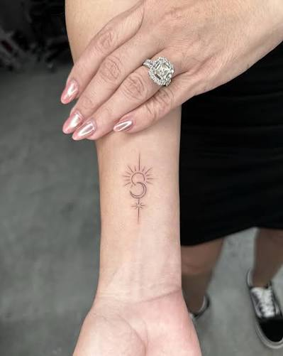
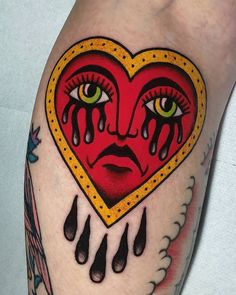
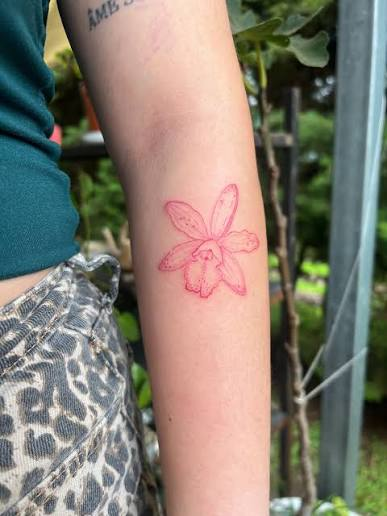

De la libreta a la piel
Diseños y tatuajes.
Una pequeña muestra de ideas para inspirar tu próxima pieza.

Línea fina
Sol y luna

Tradicional
Corazón clásico

Botánico
De la libreta a la piel
Una pequeña muestra de ideas para inspirar tu próxima pieza.

Línea fina

Tradicional

Botánico